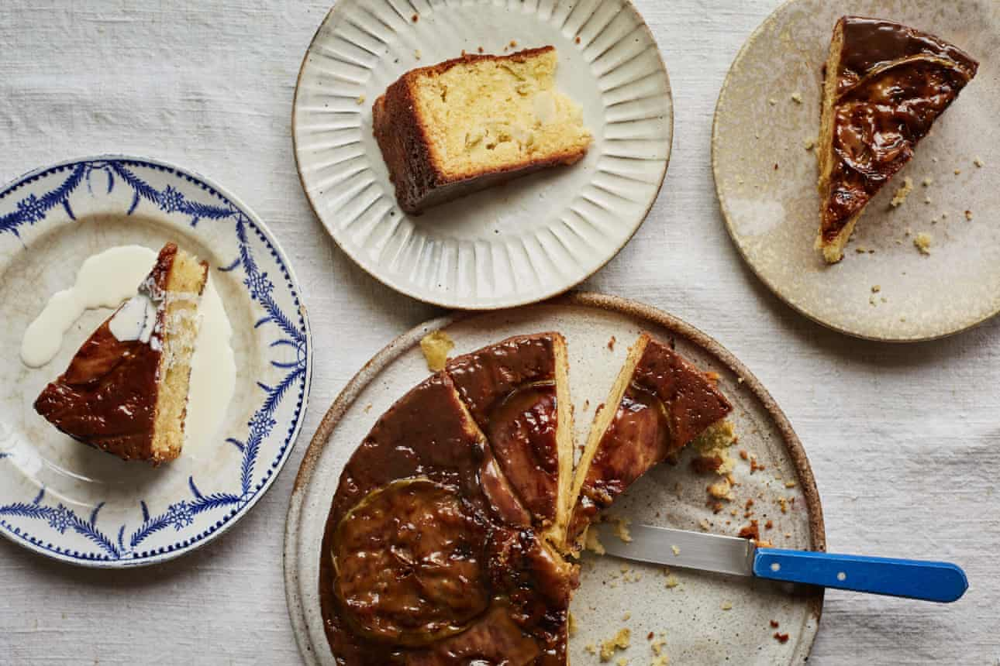

Ravneet Gill’s recipe for toffee apple upside-down cake

Photo of Grilled Chicken Skewers
Ingredients
- 250g unsalted butter, softened
- 250g golden caster sugar
- 4 eggs
Steps
- Heat the oven to 200C (180C fan)/350F/gas 4 and grease and line the bottom and sides of a 20cm cake tin with greaseproof paper.
- Make the toffee sauce by mixing all of the ingredients in a saucepan and bringing to a gentle simmer. Stir well, take off the heat, then leave to cool.
- Put the butter and sugar in a bowl and beat until pale and fluffy. Beat in the eggs one at a time, followed by the lemon zest and vanilla extract. Fold in the diced apples, followed by the flour and salt, and mix well.